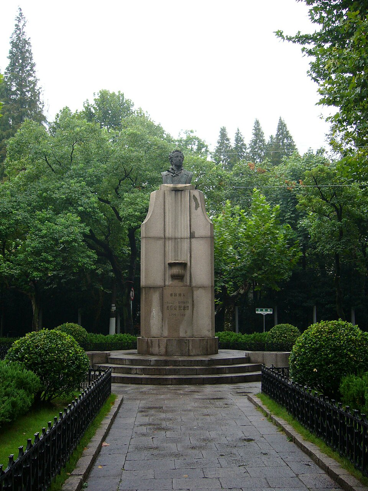

Остановка 1
第1站
Памятник Пушкину普希金像
Треугольник улиц Фэньян, Юэян и Таоцзян. Район Сюйхой.
徐汇区汾阳路、岳阳路、桃江路交叉口。

Прочитать за минуту一分钟读完
Искать его надо в сквере. Туда выходят сразу три улицы: Фэньян, Юэян и Таоцзян. Раньше это был французский сеттльмент.
像在一个小花园里，三条路碰在一起：汾阳路、岳阳路、桃江路。从前这里是法租界。
Узнать подробнее了解更多
Русские жители Шанхая собрали на него деньги к ста годам со смерти Пушкина. Открыли 11 февраля 1937 года. На стеле была надпись по-русски, по-китайски и по-французски. Лицо смотрело на север, к России.
Дальше его ломали два раза, не один. В 1944 году снесли японские власти. После войны, в 1947-м, бюст вернули на тот же сквер. В 1966-м, когда в городе срывали старые памятники, этот тоже стащили с камня и разбили в куски.
Бюст, перед которым можно стоять сейчас, уже третий. Его сделали скульптор Гао Юньлун и архитектор Ци Цзычунь. Открыли в августе 1987 года, к 150 годам со смерти поэта. Смотрит он на юг.
Юг меня сбил. Я была уверена, что он обязан смотреть туда же, куда в 1937-м. Мне потом сказали проще: в Китае почётному человеку и дому лучше глядеть на юг, там больше света. А в 1937-м про красивый свет никто не думал. Лицо сделали к России.
Пушкин в Шанхае не жил. Памятник про людей, которые здесь жили и не хотели забыть книгу.
上海的俄国人凑钱，纪念普希金去世一百年。1937年2月11日揭幕。碑上有俄文、中文和法文。脸朝北，朝俄国。
后来毁过两次，不是一次。1944年日军拆掉。1947年重立。1966年“文革”时，胸像被拉下来砸碎。
现在这座是另一座。雕塑家高云龙、建筑师齐子春做的。1987年8月揭幕，那年是普希金去世一百五十年。脸朝南。
为什么朝南，我一开始没懂。在中国，房子和受尊敬的人常常朝着太阳：亮，也合习惯。1937年立像不是为了好看的光，是为了脸朝着俄国。
普希金没在上海住过。像是给住在这里、不想忘掉书的人立的。
На карте在地图上
Важно не перепутать别弄混
Пушкин в Шанхае не жил. Нынешний бюст — уже третий, и он смотрит на юг. Первый смотрел на север, к России. Это не одно и то же лицо и не одна и та же причина.
普希金没在上海住过。现在的胸像是第三座，脸朝南。第一座脸朝北，朝俄国。不是同一张脸，也不是同一个原因。
Вопрос для школьника给同学的问题
Почему в 1937 году лицо сделали к России, а в 1987-м его повернули на юг?
为什么1937年脸朝俄国，1987年却朝南？
Что установлено точно已经核对过的
Даты 1937, 1944, 1947, 1966 и 1987, имена скульптора и архитектора, поворот лица. Это сверено по двум страницам в списке ниже.
1937、1944、1947、1966、1987这些年份，雕塑家和建筑师的名字，脸的朝向。下面两页对过。
Что пока требует проверки还要再核对的
Свой кадр с тротуара я ещё не сняла. На фото сейчас чужой снимок нынешнего бюста.
人行道上的照片我还没拍。现在用的是别人拍的这座胸像。
Источники этой страницы这一页的出处
- 普希金像（上海），китайская Википедия. Даты 1937, 1944, 1947, 1966, 1987 и поворот лица на юг. Скульптор Гао Юньлун, архитектор Ци Цзычунь.1937、1944、1947、1966、1987这些年份，脸朝南。雕塑家高云龙，建筑师齐子春。
- Дом русского зарубежья, памятник Пушкину. Открытие 11 февраля 1937 года. Надпись на трёх языках. Лицо первого памятника на север.1937年2月11日揭幕。碑上有三种文字。第一座脸朝北。
Учебный маршрут: Пушкин в Шанхае课堂路线：普希金在上海
Рядом по смыслу:意思上相邻的： Два храма两座教堂
Последняя правка страницы: 30 октября 2026. Это дата правки сайта, не дата исторического события.本页最近一次修改：2026年10月30日。这是网页的修改日期，不是历史事件的日期。